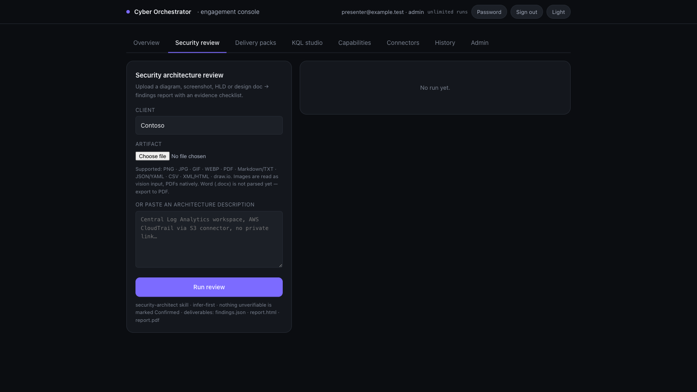

What we are delivering
Three real workspaces. One governed delivery engine.

10 versioned skills available253 tests collected in the repository audit0 live cloud write actions in Phase 1
Reduce repeated delivery effort by turning one governed request into a security review, delivery pack or validated KQL—while experts keep approval.

Remember the context. Package the method. Control the execution.
Illustrative trace for presentation rehearsal. The real demo should open the current product run and its actual evidence.